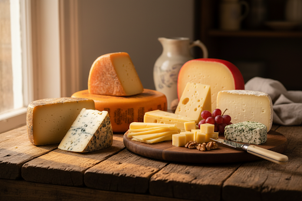
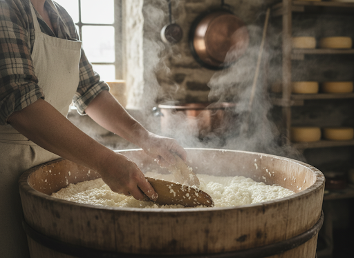
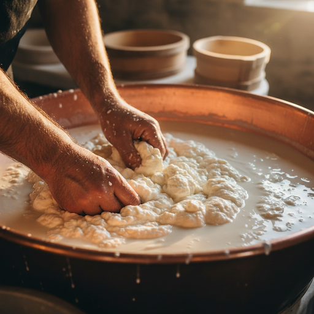
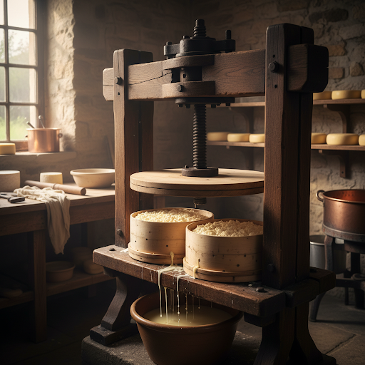
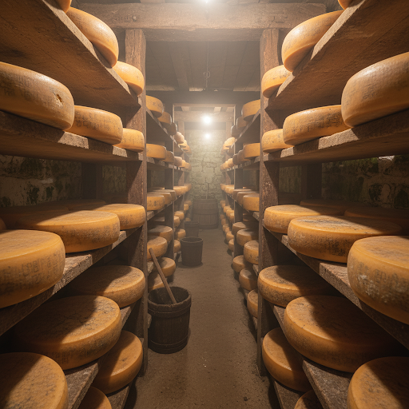

Al meer dan 30 jaar maken wij ambachtelijke boerenkaas van verse melk van onze eigen koeien. Met traditionele technieken, geduld en vakmanschap creëren wij kazen met een unieke smaak en karakter.


Het proces begint met de meest verse, onbewerkte melk direct van onze koeien. Deze rauwe melk vormt de basis voor de rijke, volle smaak die zo kenmerkend is voor echte boerenkaas.
Door toevoeging van stremsel en zuursel stremt de melk. Dit zorgt ervoor dat de vaste deeltjes in de melk samenklonteren en de vloeibare wei zich afscheidt. Dit cruciale moment vereist precisie en ervaring.
"Van verse melk tot karaktervolle boerenkaas, volledig op onze eigen boerderij."
Vakmanschap in drie zorgvuldige stappen.

De gestremde melk wordt gesneden tot kleine korrels, de zogenaamde wrongel. Hierbij scheidt de wei zich af.

De wrongel gaat in speciale kaasvormen en wordt stevig geperst om het laatste vocht te verwijderen en de vorming te voltooien.

Na het persen krijgt de kaas een pekelbad voor de smaak en korstvorming, gevolgd door een rustige rijping op houten planken.
Geduld is een schone zaak, zeker bij het maken van kaas. Onze kazen rijpen op traditionele houten planken in ons speciale kaasruim. Tijdens dit proces ontwikkelen ze hun unieke smaakprofielen, van mild en romig tot intens en pikant.
Zacht, romig en mild van smaak.
Voller van smaak, met een lichte pit.
Pikant en brokkelig, met kleine rijpingskristallen.
Zeer intens, rijk en complex van smaak.
Naast onze naturel kazen, bieden wij een heerlijk assortiment kruidenkazen. Verse kruiden en specerijen worden zorgvuldig door de wrongel gemengd voor verrassende smaakcombinaties.
Voor speciale wensen of grote bestellingen, neem gerust contact op.
Ontdek ons volledige assortiment boerenkazen in onze winkel in Sommelsdijk. Vers van het mes en met persoonlijk advies.